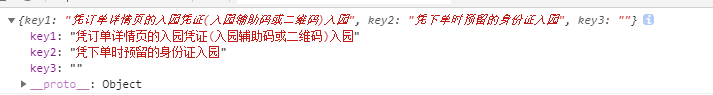

同事碰到接口返回为数值的键值，想处理成自己想要的键值的对象，于是写了个方法来处理类似的数据
const content = '{"1":"凭订单详情页的入园凭证(入园辅助码或二维码)入园","2":"凭下单时预留的身份证入园","3":""}'
const newKey = ['key1', 'key2', 'key3', 'key4']
function keyConversion(content = '{}', newKey = []) {
const obj = JSON.parse(content)
if (Object.keys(obj).length == 0) return {}
let [arr, index] = [
[], -1
]
for (let key in obj) { //遍历拿取对象内的值
arr.push(obj[key]) //键值为数字时可以通过 obj[key] 的方式拿出来对应数字键值的值
}
return arr.reduce((pre, cur) => {
index++
return Object.assign(pre, { //每次在对象内合并增加一个新的键值对
[newKey[index]]: cur
})
}, {})
}
const newObj = keyConversion(content, newKey)
console.log(newObj)